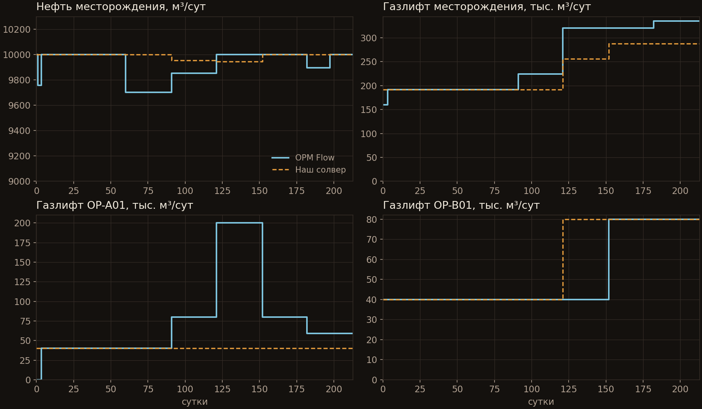

эксперимент · gaslift-04 · opm flow
Газлифт с оптимизацией.
Та же нефть, меньше газа.
Шесть добывающих на ограничении по устьевому давлению, общая цель месторождения 10 000 м³/сут нефти и ограниченный газ на лифт. Симулятор сам решает, какой скважине сколько газа дать. Тестовая модель GASLIFT-04 из opm-tests, эталон посчитан OPM Flow, deck без правок.
01 — постановка и итог
GASLIFT-04, первые 213 суток
Сетка 9×9×2, шесть добывающих OP-* и четыре нагнетательных воды. Добывающие работают на THP 30 бар по таблицам VFPPROD с газлифтом (ALQ — расход газа). У месторождения цель по нефти GCONPROD 10 000 м³/сут, у платформы PLAT-2 — предел воды 3 000 м³/сут с действием RATE. Коэффициент эксплуатации WEFAC 0,8. Газ раздаётся порциями по 40 000 м³/сут (LIFTOPT), оптимизация включается и выключается по расписанию (WLIFTOPT), позже появляются экономический градиент и веса скважин.
Цель по нефти выполняется так же, как у OPM: накопленная нефть к 213 суткам выше на 0,6%. При этом газа на лифт мы тратим на 9,7% меньше. До 91-х суток раздача газа совпадает с OPM порция в порцию. Дальше алгоритмы расходятся, разбор ниже.
Среднее по времени |наш − OPM| / масштаб: дебит нефти 0,65%, газа 0,65%, закачка воды 2,6%, добыча воды 6,6% (воды мало, масштаб — 1% дебита нефти), газлифт месторождения 7,5%. Накопленные объёмы — сумма дебитов на отчётных интервалах.

02 — алгоритм
Как раздаётся газ
Схема Eclipse: газ выдаётся порциями, и каждая очередная порция уходит туда, где даёт больше всего нефти. Распределение пересчитывается на шаге по времени после того, как посчитаны групповые доли, не чаще интервала LIFTOPT.
- ГрадиентДля каждой скважины считается прирост нефти от следующей порции, делённый на её объём и умноженный на вес WLIFTOPT. Порция уходит скважине с лучшим градиентом, если он не ниже экономического порога LIFTOPT. Дебиты считаются на устойчивой ветви THP при замороженном пласте (линеаризация притока с последней сборки), без лишних решений всей системы.
- Упор в цельДебит скважины не выше её текущей уставки — своей или доли группы, в фазе этой уставки. Как только цель группы GCONPROD выполнена (с учётом WEFAC), её скважины газ больше не получают. Перерасхода, который ничего не добавляет к нефти, нет.
- МаксимумыГаз скважины ограничен максимумом WLIFTOPT или краем таблицы VFP, газ группы — GLIFTOPT. Сумма по группе тоже считается с WEFAC, как групповой дебит.
- Заглушенные скважиныСкважине, которая без газлифта вообще не течёт, одна порция может ничего не дать, и обычный градиент её бы навсегда отсёк. Для неё градиент считается на столько порций вперёд, сколько нужно, чтобы она пошла.
- WEFACПласт видит ε·q, то есть средний дебит с простоями. Скважинное уравнение, THP и WOPR работают с фактическим дебитом q. Групповые и промысловые суммы, накопленные и газлифт месторождения умножаются на ε. Доля группы делится на ε, чтобы скважина в работе давала столько, сколько нужно в среднем.
03 — устье
Где газлифт ломает Ньютона
С газлифтом кривая лифта VFP по дебиту немонотонна: при малых дебитах забойное давление растёт (жидкость не выносится), при больших — тоже растёт (трение). Уравнение «забой из пласта = забой по VFP» имеет два корня. Левый неустойчив: Ньютон на нём скачет, а скважина в жизни на нём не работает. Кусочно-линейная таблица добавляет изломы, на которых Ньютон зацикливается.
- Устойчивая ветвьКорень ищется не Ньютоном с текущей точки. Мы сканируем забой от предела BHP вверх до максимального давления в ячейках скважины, берём первое пересечение «снизу вверх» и уточняем бисекцией. Если предел BHP жёстче — работает он, если корня нет — скважина не может работать на этом THP.
- Локальное решениеПосле каждой итерации Ньютона забой скважин в режиме THP пересчитывается по устойчивой ветви (как solveWellEquation в OPM). Без этого на изломах таблиц шаги резались до минимума.
- Переключение дебит → THPРешение принимается по потенциалу на устойчивой ветви, а не по BHP_VFP(текущий дебит): на левой ветви кривая выше и даёт ложное переключение. При переключении забой сразу ставится в корень. Не больше трёх переключений скважины за шаг — иначе дребезг.
- Режим stopСкважина, которая на THP не течёт, получает на шаг нулевой дебит и проверяется снова на следующем — она не закрывается навсегда и не ломает Ньютона отрицательным притоком.
- ДопускиНевязка THP — 1000 Па, с четвёртой итерации 10 кПа. Для скважин с нулевой целью знаменатель относительной ошибки дебита не меньше 0,01 м³/сут: иначе машинный ноль давал ложную несходимость.
04 — расхождение с opm
Почему 7,5%, и чья это ошибка
По дебиту нефти мы совпадаем с OPM на 0,6%, по газлифту месторождения — на 7,5%. Мы проверили очевидное объяснение: последняя порция перебирает цель. Доводка последней порции бисекцией до точного попадания в цель не изменила ни одной цифры. Значит, дело в другом.
OPM распределяет газ внутри итераций Ньютона, на ещё не решённом состоянии пласта, и поверх этого запускает групповой этап, который снимает и перераздаёт порции между скважинами. Результат зависит от хода итераций. На графике это видно:
- 60–91 суткиOPM недобирает цель, 9 702 вместо 10 000 м³/сут, и газ не добавляет. Прибавка у него приходит только на следующем отчётном шаге. У нас цель выполнена.
- 121–152 суткиOPM даёт OP-A01 сначала 80, потом 200, потом снова 80 и 59 тыс. м³/сут газа. При 200 тыс. нефть месторождения не выше, чем у нас при 40 тыс. на этой скважине. Мы отдаём порцию OP-B01, где её градиент выше.
- 91–152 сутки у насТоже недобор, около 9 950 м³/сут (0,5%): газ раздаётся по пласту начала интервала LIFTOPT, а за интервал скважины слегка просаживаются.
- После 213 сутокOPM закрывает все добывающие как «can not operate»: тест WTEST перезапускает их без газлифта, они не текут, и до конца расчёта у него нули. Мы считаем все 1826 суток, поэтому сверка идёт до 213-х.
Повторить OPM точнее можно, только скопировав его схему раздачи внутри Ньютона вместе со скачками. Физику это не улучшит. Поэтому мы оставили детерминированную раздачу по сошедшемуся состоянию и сверяемся по нефти. Тест test_gaslift_matches_opm: дебиты нефти и газа в пределах 1%, воды 8%, газлифт 20%.
05 — чего пока нет
Границы, как они есть
- СетьПоверхностной сети (NETWORK, BRANPROP, NODEPROP) пока нет: THP задаётся скважине, а не считается из давления узла сборного коллектора. Это следующий этап.
- Газ на лифтГаз лифта не берётся из добычи и не ограничен балансом компрессора. Он входит в таблицы VFP и в векторы WGLIR/FGLIR, но не в добычу газа.
- Шаг раздачиГаз выдаётся только целыми порциями LIFTOPT. OPM на поздних шагах выдаёт и дробные, например 59 тыс. м³/сут.